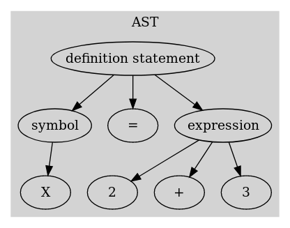
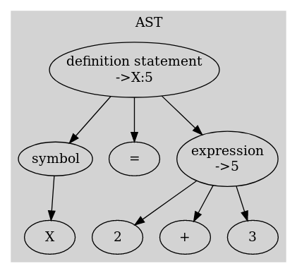

Functioning¶
Warning
this page is not up to date, consider it to be an overview of what is done in SourceFu
A generic methodology for sources deobfuscation¶
Partial Evaluation consists in interpreting only subparts of the AST of a source code in order to simplify them. With such a thing, interpretation does not have to be fully correct and extensive, but results are often more extensive than when one only uses regexes. The following paragraph aims at explaining the full approach behind SourceFu.
First, the source language has to be identified. Indeed, each languages has some intrinsic particularities and it’s not possible to define a generic program for every source language. The first step of the methodology is to create a grammar for the language, in order to create a parser for the said language. Once the parser is ready, the deobfuscation is realized through 3 steps :
the first step consists in code simplification (simplifier step), that does not need any interpretation at all. The source is parsed and the abstract syntax tree is constructed. Comments are first deleted (actually it might be interesting to determine if comments are useful or not). To do so, each node in the abstract tree that are comments are replaced with an empty line. Also, a deadstore optimization is realized. To do so, while traversing the parse tree, for each local scope, all symbols are registered in a list and their usage is tracked. Then, every symbol definition that does not have an associated usage is deleted. The algorithm associated with this step is the following in pseudo code:
1) constructing the lists:
When meeting a symbol definition : if the symbol definition is tied to a function call: return; add the symbol to symbol list When meeting a symbol usage : if the symbol is the same than the scope's name (i.e. it's the name of the function for example): return; if the symbol is one of the argument of the scope: return; if the symbol is already defined within the definition list (comparison by the index of the token from the parsing): return; if the symbol is in a definition statement for the same symbol (like X=X+1): return; label the latest given symbol in symbol list as used
2) resolving the deadstore:
for each scope: for every symbol definition: if symbol is not marked as used: delete the definition
Finally, once deadstore optimization is done, the source might contains control flow structures, e.g. if statements, loops, or functions, that are empty. A last pass ensures those control flow structures, giving nothing to the code, are erased also. Also, if some control structures are known to be invalid or never used, then it is simply erased from the code, like the following one (here the whole if statement could be erased):
Function Func1()
If False Then
Func1 = 3
End if
Func1 = 2
End Function
- the second step consists in rewriting the code into a simplified form. To do so, the code is interpreted as much as we can, and the AST is annotated with the values of nodes that can be interpreted. Once the interpretation is done, AST is parsed to replace sets of nodes with the associated value or the alternative text. To fully understand that, let’s take the following statement : X = 2 + 3
The associated abstract syntaxt tree of this statement could be the following :
{kind=link}
Here, the expression 2+3 can be evaluated to 5. The AST can so be annotated like so:
{kind=link}
Then, replacement is done following this algortihm:
traverse_node(node):
if node is annotated and node's children number > 2 :
replace current node and all of its children with the annotation;
end;
for each children:
traverse_node(children)
traverse_node(start node);
For this step, the list of modifications is explained in the next paragraph.
Step 1 and 2 are iterative : they are run consecutively until no more modification is realized on the code. Indeed, the interpretation may lead to useless definitions. Unfortunately, there is no way to tell first how many iterations are needed to deobfuscate.
- the final step is a beautifying step. The idea here is to provide a syntax easier to read for the human eye, by setting a correct indentation to the code, and to remove potential obfuscation based on variables names by renaming them with an easier to read name.
details¶
The following section describes each of the transformation that may be applied to the code by SourceFu. The presentation is generic, and each of the transformations could normally be applied to multiple languages. In the code however, every transformation needs to be adapted to the underlying language. The following section presents what is done for VBA, as it’s for now the only language supported by SourceFu. This sections should evolve as such in future.
For each transformation realized by SourceFu, a status is given. a completed statement means that normally the transformation should work (SourceFu still remains a huge work in progress). A not complete statement means there is still some work to do (like all cases are not taken into account now), bu the transformation is still safe to be used. An experimental statement means however that the transformation is not safe to be used for now, as it may transforms things that should not be transformed. Finally, TODO statement presents a planned transformation that still needs to be done.
Simplifier step¶
Comments removal¶
- status : completed
This transformation simply removes every comments from the code. Ideally, i would like to create some heuristics to be able to say if comments appear to be interesting or not. Unfortunately, i don’t have the database to say so…
The following code :
' this is a comment for func1
Function Func1()
'useless comment
Func1 = 2
REM ahah dafuck
End Function
is transformed as such :
Function Func1()
Func1 = 2
End Function
IF statements simplifier¶
- status : completed
The expression interpreter rewrites boolean expression, if they can be evaluated, by “False” or “True”. As such, it’s possible to write a simple IF statements simplifier depending on the text of the boolean expressions used in the complete if-elseif-else structure. Basically, if all boolean expressions of the if-elseif-else structure are either equal to “False” or “True”, then the complete structure can be simplified by removing all cases that are evaluated to “False”. It then remains the only block that will be executed by the code. In future, this simplifier should not depend of the text but from the boolean expression value instead. Here is an example :
Function Func1()
X = 2
If False Then
X = 4
Else If True Then
X = 6
Else
X = 1
Func1 = X
End Function
This previous code is transformed like that by this transformation:
Function Func1()
X = 2
X = 6
Func1 = X
End Function
Case statements simplifier¶
- status : TODO
As in the previous transformation, only the case evaluating to True is kept by SourceFu in a switch statement, if the expression can be evaluated. The idea is so to simply get the value of the expression in the Select, because the partial interpreter should have transformed it. Here is an example :
Function Func1()
X = 2
Select Case 3
Case 1
X = 4
Case 2
X = 6
Case 3
X = 1
End Select
Func1 = X
End Function
This previous code is transformed like that by this transformation:
Function Func1()
X = 2
X = 1
Func1 = X
End Function
Loops simplifier¶
- status : TODO
The idea here is to move out of loops all statements that are not impacted by the loop itself. The complete list of what is realized is still not done, as this transformation is still not coded :P. Here is an example of what could be done :
Function Func1()
X = 2
For i = 1 To 5
Dim Y = 3 as Integer
X = 4
X = 4 + i + Y
Next
Func1 = X
End Function
This previous code is transformed like that by this transformation:
Function Func1()
X = 2
Dim Y = 3 as Integer
X = 4
For i = 1 To 5
X = 4 + i + Y
Next
Func1 = X
End Function
Dead Code elimination¶
- status : not complete
The idea here is to delete code that does not affect the program. For now, the idea is to delete every variables declaration realized before subsequent declarations until the variable is used in the program. In future, the idea will be to also delete code behind “Exit Sub” statement and such. Here is an example of what is realized now:
Function Func1()
X = 2
X = 5
Func1 = X
End Function
In this example, there is no need to keep the first declaration of X. The code can be so transformed like this :
Function Func1()
X = 5
Func1 = X
End Function
VBA Constants replacement¶
- status : not complete
VBA defines multiple constants, that are defined as this by the language. In order to treat them for partial evaluation, those are replaced by their value. Unfortunately, this transformation does not increase the visibility, and it should be able to revert the transformation back. Here is an example of the transformation realized:
Function Func1()
X = StrConv("CouCou", vbLowerCase)
Func1 = X
End Function
to :
Function Func1()
X = StrConv("CouCou", 2)
Func1 = X
End Function
Empty blocks removal¶
- status : completed
This transformation deletes the structures in which there are empty blocks. Those structures can be loops, conditionnal branchs as well as Functions or Subs. Here is an example :
Function Func1()
If 3 = 2 Then
End If
Func1 = 4
End Function
Here, the conditionnal branch is useless because it does nothing. It is simply deleted by the transformation :
Function Func1()
Func1 = 4
End Function
Partial evaluation step¶
this paragraph is still under construction
This step is not complete at all for now. Hopefully, a complete interpretation of the code should be realized. From that, AST is annotated and rewriting is realized. Rewriting rules should also be specified completely, and that is not done for now. Especially, it’s hard to model complex objects, loops, and arrays. The following things are done for now:
Standard Functions evaluation¶
Several standard functions of VBA are emulated given the fact that their arguments can be evaluated correctly.
Expressions simplification¶
logic expressions and operand expressions are simplified into reduced expressions.
Constants propagation¶
When a variable is assigned, then its value is propagated throughout the program, unless it’s redefined within a loop.
Functions evaluation¶
The idea here is to simply check if one function returns a constant value. If so, any call to this function will be replaced by the constant value.
Several problematics still need to be treated. For example, one of the problem of VBA is the fact there is no entry point per se. It’s so particularly difficult to treat correctly global variables.
Beautifying Step¶
The final step of SourceFu is to improve the syntax of the code once every transformations have been realized. For that, two transformations are done :
Variables renaming¶
- status : experimental
On of the common obfuscation technique is to use variables names that are difficult to read or distinguish for humans. To circumvent this, this transformation renames every variables based on their scope. The following nomenclature is done now : <scope>_<n°>. Unfortunately, this transformation still renames more than necessary (especially, it renames object properties, and there are some standard names that should not be renamed). Here is an example of what this transformation may do:
Dim U as Integer
Function Func1()
X = 2
Dim Y = 3 as Integer
U = 4
For i = 1 To 5
X = 4 + i + Y
Next
Func1 = X + U
End Function
This code is transformed as such :
Dim global_1 as Integer
Function Func_1()
local_1 = 2
Dim local_2 = 3 as Integer
global_1 = 4
For local_3 = 1 To 5
local_1 = 4 + local_3 + local_2
Next
Func1 = local_1 + global_1
End Function
Beautifying¶
- status : completed
a standard beautifying is applied to the code at the end : empty lines are removed and indentation is set correctly.
Going Further¶
Actually, SourceFu is hugely impacted by the control flow structures of the source as those are not interpreted. More, functions evaluation is simply tied to check if the return value can be evaluated or not as constant. As such, SourceFu might not provide good enough results.
To overcome those caveats, one point could be to write a somewhat full interpreter along with SourceFu. While the code is interpreted, the AST is still annotated by the Interpreter if it can. Finally, operations can still be realized given its results.